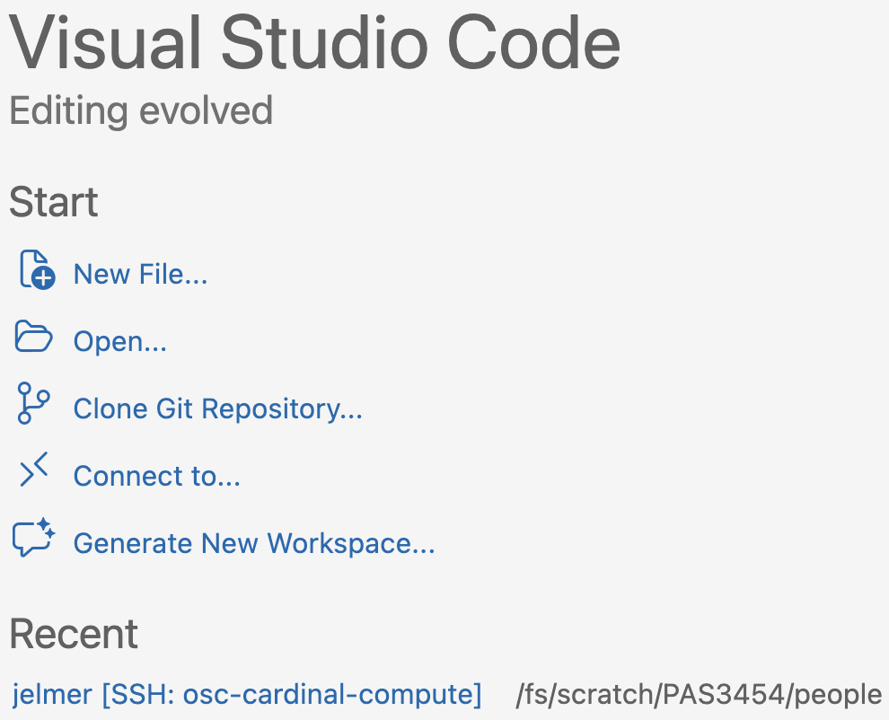
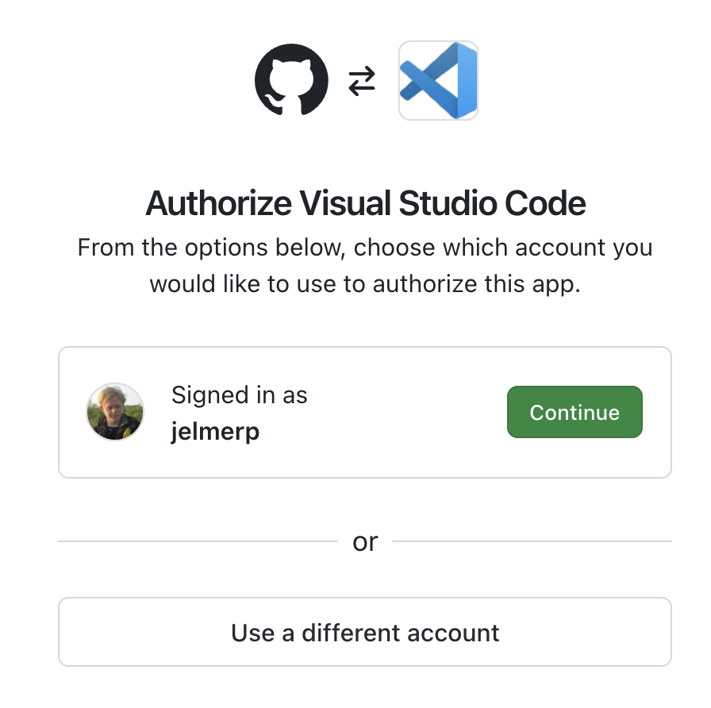
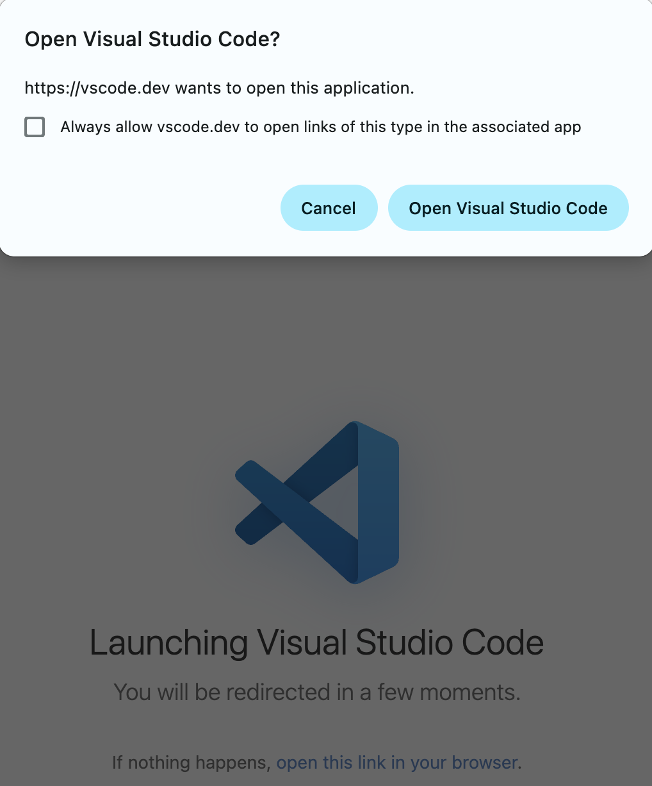
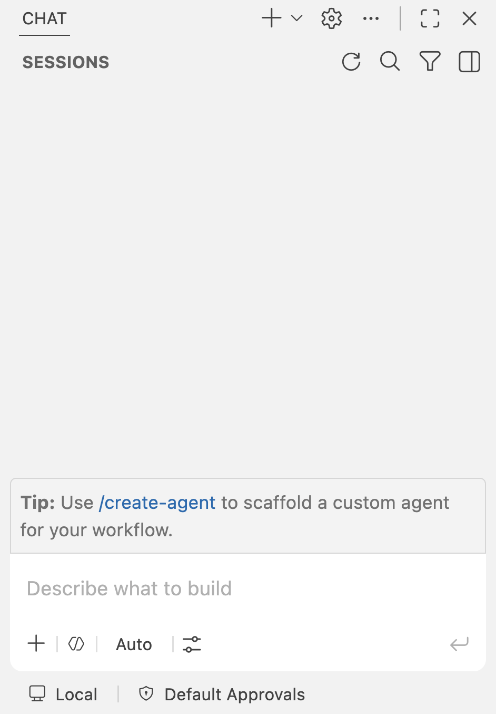
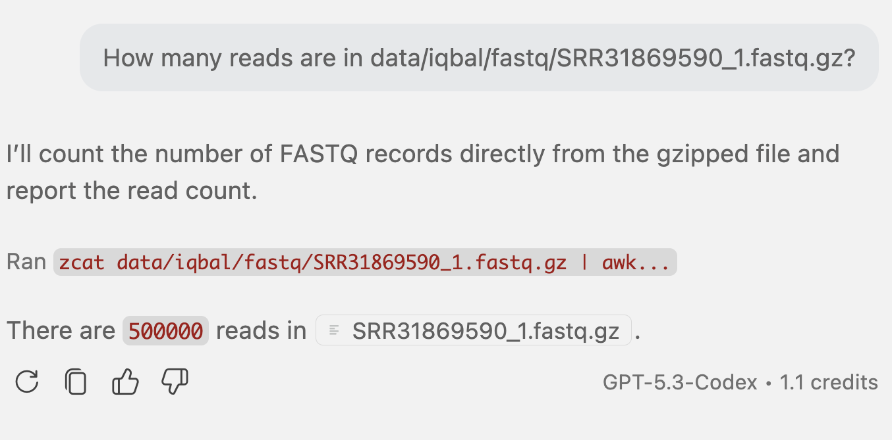
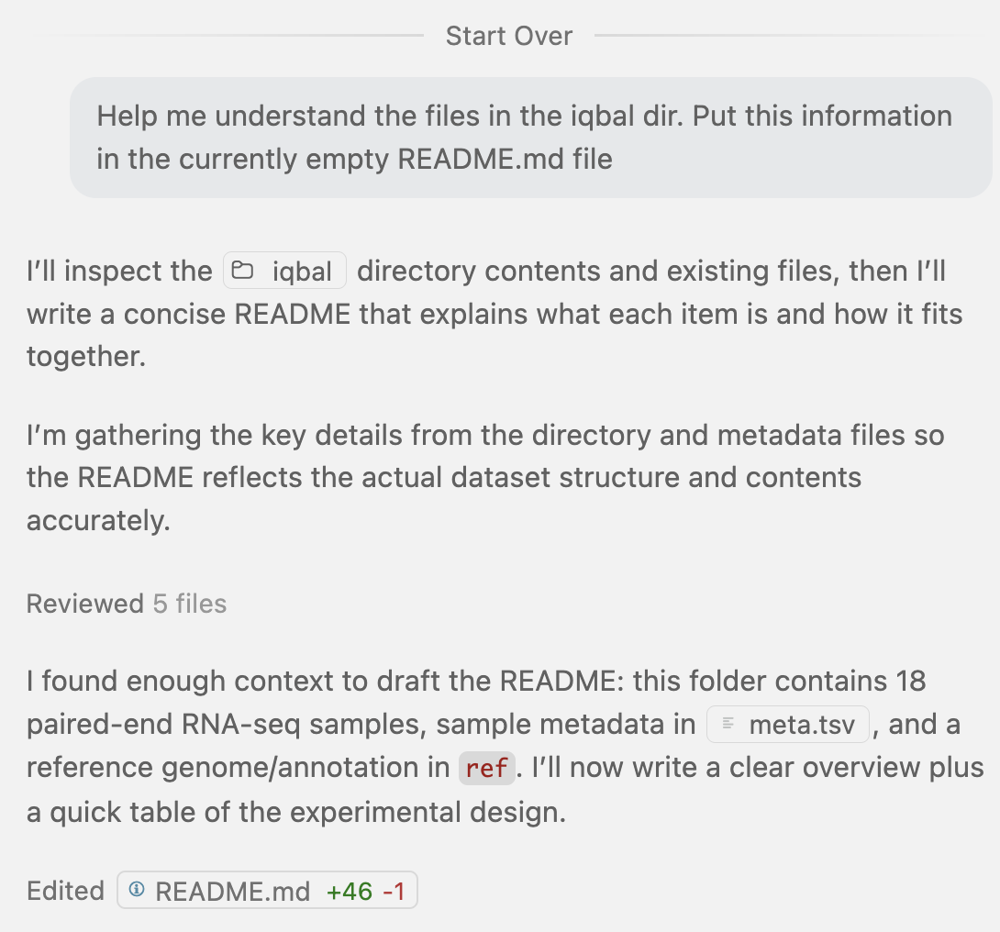
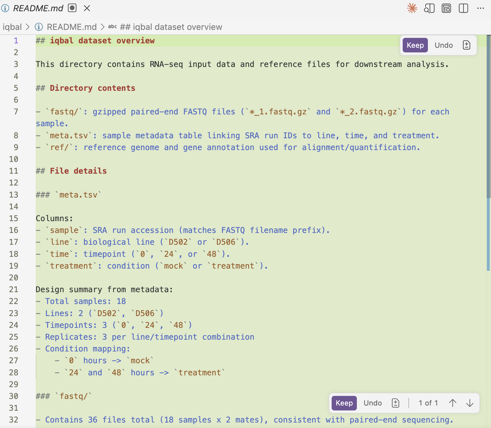
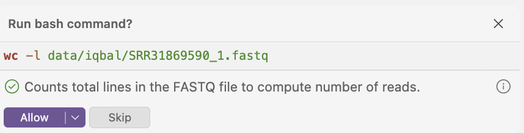

6: Code completions with GitHub Copilot
Setting up and using our first agentic AI tool!
![]()
Day 2: setting up
Open VS Code, or if you already have a window open that’s not connected to OSC, open a new VS Code window with
File>New Window.In the
Recentsection in the VS Code “Welcome” document, you should see the OSC folder with your OSC username for theosc-cardinal-compute— click on that line to open that folder and in the process connect to OSC!
A screenshot showing an entry in the “Recent” section of the VS Code Welcome document.
Yours should have your OSC username.What if you don’t see the folder in the
Recentsection?Start a new session by clicking the
Connect to...button in the “Welcome” document, and selecting theosc-cardinal-computeconnection. Alternatively, open the command palette (in the cog wheel menu) and find theRemote-SSH: Connect to Host...option to select you connection.Once connected, click
File>Open Folder(orOpen...with a folder icon in the Welcome document) and select your dir/fs/scratch/PAS3454/people/<user>.
Can’t get the
osc-cardinal-computeconnection to work? Switch toosc-cardinal-logininstead.Open a terminal and check that you are indeed in dir
/fs/scratch/PAS3454/people/<user>:pwd
1 Introduction
As mentioned in the previous session:
In the rest of this workshop, we’ll primarily use the following set of tools to run code, access data, and make use of agentic AI tools:
- A code editor, VS Code
- A shared computing environment, OSC (the Ohio Supercomputer Center)
- Generative and Agentic AI tools integrated in our code editor, GitHub Copilot and Claude Code
We’ll start working with these agentic AI tools in this and a following session. Specifically, we will:
Use so-called “code completions” in GitHub Copilot (this session), where you get AI suggestions within the VS Code editor as you type. This is a feature that Claude Code does not have.
Use the more powerful functionality of (agentic) chat in Claude Code (next section). While GitHub Copilot can also do this, we’ll use Claude Code for this, for reasons we’ll explain in a bit.
As for this session specifically, we’ll:
- Copy and briefly explore a small RNA-Seq dataset to analyze with the help of our AI tools.
- Set up GitHub Copilot in VS Code.
- And most of all, start using the code completion features in GitHub Copilot.
2 An RNA-Seq dataset to practice with
Let’s navigate to a suitable dir and each get our own copy of a high-throughput sequencing dataset to analyze with the help of our AI tools.
You should still have an active session in VS Code connected to OSC at dir
/fs/scratch/PAS3454/people/<user>(where<user>is your personal username).If not, click here for instructions to do so.
Open VS Code, or if you already have a window open that’s not connected to OSC, open a new VS Code window with
File>New Window.In the
Recentsection in the VS Code “Welcome” document, you should see the OSC folder with your OSC username for theosc-cardinal-compute— click on that line to open that folder and in the process connect to OSC!
If you don’t see this folder in the
Recentsection after Step 1, simply start a new session, for example by clicking theConnect to...button in the “Welcome” document (also visible in the screenshot above), and select theosc-cardinal-computeconnection. Once connected, clickFile>Open Folder(orOpen...with a folder icon in the Welcome document) and select you dir/fs/scratch/PAS3454/people/<user>.Open a terminal and check that you are indeed in dir
/fs/scratch/PAS3454/people/<user>:pwd# Make sure it's not your home dir, which starts with /users/, instead /fs/scratch/PAS3454/people/jane(If you’re elsewhere, use the Open Folder functionality to try again.)
Copy a shared data dir with the Iqbal et al. (2025) files to your personal dir:
# After this, the data will be in `/fs/scratch/PAS3454/people/<user>/iqbal` cp -rv /fs/scratch/PAS3454/data/iqbal .'/fs/scratch/PAS3454/data/iqbal' -> './iqbal' '/fs/scratch/PAS3454/data/iqbal/ref' -> './iqbal/ref' '/fs/scratch/PAS3454/data/iqbal/ref/GCA_000004655.2.fna' -> './iqbal/ref/GCA_000004655.2.fna' '/fs/scratch/PAS3454/data/iqbal/ref/GCA_000004655.2.gtf' -> './iqbal/ref/GCA_000004655.2.gtf' '/fs/scratch/PAS3454/data/iqbal/meta.tsv' -> './iqbal/meta.tsv' '/fs/scratch/PAS3454/data/iqbal/README.md' -> './iqbal/README.md' '/fs/scratch/PAS3454/data/iqbal/fastq' -> './iqbal/fastq' '/fs/scratch/PAS3454/data/iqbal/fastq/SRR31869592_2.fastq.gz' -> './iqbal/fastq/SRR31869592_2.fastq.gz' '/fs/scratch/PAS3454/data/iqbal/fastq/SRR31869601_2.fastq.gz' -> './iqbal/fastq/SRR31869601_2.fastq.gz' '/fs/scratch/PAS3454/data/iqbal/fastq/SRR31869592_1.fastq.gz' -> './iqbal/fastq/SRR31869592_1.fastq.gz' # [...output truncated...]Create a new dir
S06(as in: session 6) within your/fs/scratch/PAS3454/people/<user>dir:mkdir S06Run the
treecommand to understand the current structure of your dirs and files:tree. ├── S06 ├── iqbal │ ├── README.md │ ├── fastq │ │ ├── SRR31869590_1.fastq.gz │ │ ├── SRR31869590_2.fastq.gz │ │ ├── SRR31869591_1.fastq.gz │ │ ├── SRR31869591_2.fastq.gz │ │ ├── [...output truncated...] │ ├── meta.tsv │ └── ref │ ├── GCA_000004655.2.fna │ └── GCA_000004655.2.gtf
What is in the iqbal dir?
This is RNA-Seq data from the paper Iqbal et al. (2025), in which two different rice lines were inoculated with a pathogenic fungus and sequenced the transcriptomes of the plants to see how they responded. We have the following files:
- The raw (paired-end Illumina) reads in the dir
fastq— though note that these were subsampled by us to keep file sizes and analysis times short for use during the workshop. - The sample metadata (e.g., rice variety and inoculation treatment information) in the file
meta.tsv. - Rice reference genome files in the
refdir.
What do the _1 and _2 files in the fastq dir represent? (Click to see the answer)
There are two files for each sample, e.g. for sample SRR31869590 there are files SRR31869590_1.fastq.gz and SRR31869590_2.fastq.gz.
The files with _1 contain the forward reads and the files with _2 contain the reverse reads from a paired-end sequencing library.
Ask AI to explain this to you if you don’t know what this means.
What do the .fna and .gtf file in the ref dir represent? (Click to see the answer)
- The
.fnafile is a FASTA file with the entire genome sequence. - The
.gtffile a GTF file with the genome annotation (a large table with the genomic coordinates and name of each gene, and so on).
3 About GitHub Copilot
As mentioned, GitHub Copilot is an generative and agentic AI tool that can help you write code and is the first of two similar tools we will use in this workshop, the other being Claude Code.
GitHub Copilot is not the same as the “general” Microsoft Copilot. And while GitHub Copilot is a Microsoft product, hence the similar name, you cannot currently use it institutionally at OSU. Instead, access runs through a personal GitHub account. It’s easy and free to create a GitHub account, and you may already have one from previous usage or because you followed this optional pre-workshop setup step.
Keep in mind that GitHub is a much more general platform than just GitHub Copilot, widely used for sharing and collaborating on code. Nevertheless, with your GitHub account, you are nowadays also automatically enrolled in the GitHub Copilot free plan.
While there’s also a stand-alone app, a stand-alone CLI, and a web-based interface for it, we will use the GitHub Copilot panel within VS Code.
We also mentioned that in this workshop, we’ll use GitHub Copilot for code completions and Claude Code for agentic chat. Here is an overview of the pros and cons of GitHub Copilot vs. Claude Code:
| Feature | GitHub Copilot | Claude Code |
|---|---|---|
| Inline code completions | ✅ | ❌ |
| Agentic chat | ✅ | ✅ |
| Free usage with a personal, “academic”, account | ✅ 1 | ❌ |
| Possible to pay for use with university funds | ❌ | ✅ |
| Institutional approval for use with private data | ❌ | ✅ |
| Often considered the best code assist tool | ❌ | ✅ |
The GitHub Copilot free plan will work for the purposes of this workshop, but is not sufficient for sustained Copilot use.
You may have done the optional pre-workshop setup step to obtain GitHub Copilot Student/Pro access via your academic credentials. If that was approved (should be quick) and processed (72 hours later), you’ll now have more extensive, though not unlimited, access to GitHub Copilot. For more details, see our GitHub setup page
If you didn’t do that, there isn’t much point in doing it right now, because you won’t obtain access during the workshop given the 72-hour processing time. But feel free to do so in a break or after the workshop.
4 Setting up GitHub Copilot
GitHub Copilot is available in VS Code as a pre-installed extension. Therefore, not much setup is needed: the steps below only serve to log in to your GitHub account or create one along the way.
Towards the right side of the top VS Code bar, click the Sign In button to log into GitHub:
WarningDon’t see the Sign In button? (Click to expand)In the VS Code Status Bar (the thin bar way at the bottom), there should be a GitHub Copilot icon — the icon to the left of the bell in the screenshot below:

Your version of the icon may be striked-through, which means that GitHub Copilot is not yet active. Click on the icon and the login pop-up should appear.
A pop-up similar to the left-hand image below should appear, and if you click on Continue with GitHub, you should see something like the right-hand image:

Logging into GitHub to use GitHub Copilot. From the GitHub Blog. TipGitHub account optionsFor those without a GitHub account, you can create one on the fly, either with the “Create an account” button on the bottom, or semi-automatically via an existing Google login by clicking the “Continue with Google” button.
For those with a GitHub account, you can log in with your existing credentials. Don’t use “Continue with Google” unless you know your GitHub account is already linked to your Google account, or account confusion may arise.
NoteWere you already signed in to GitHub? Then the prompt should look like this (Click to expand)
Finally, you may be prompted to authorize VS Code to access your GitHub account, which you should do:

GitHub Copilot lives in a “Secondary Side Bar” on the righthand side, which you can toggle by pressing the rightmost icon in the screenshot below, on the right side of the top VS Code bar:
Clicking the rightmost icon toggles the Secondary Side Bar with GitHub Copilot. TBA: highlight icon That AI chat sidebar should look something like this:

As mentioned above, unless you have already obtained GitHub Copilot Student/Pro access via your academic credentials, you will be automatically using the GitHub Copilot free plan after logging in or creating a new account.
5 Code completions with GitHub Copilot
“Code completions”, also known as “code suggestions” or “inline suggestions”, are a feature of GitHub Copilot where you get suggestions for additional or modified code —or other text— as you type in your VS Code editor. There are two types of code completions, and we’ll go over these one by one.
5.1 Ghost text suggestions
Ghost text suggestions are the most common type of code completions. As you type, GitHub Copilot will provide suggestions in a light gray font, which you can accept by pressing the Tab key. We may think of ghost text suggestions as in turn consisting of two types of suggestions:
Completion suggestions
These suggestions try to complete a line you are typing, or suggest a next line based on the previous one. For example, if you type #! as the first line of a shell script, GitHub Copilot is likely to suggest the full shebang line #!/bin/bash for you:

#!, and the /bin/bash suggestion appeared.The purple highlighting is also done by Copilot to draw attention to it.
Here’s a quite different kind of example, which goes to show that Copilot can be useful for many kinds of text. (This is especially illustrative if you know some (Quarto) Markdown.)
In a Quarto Markdown document that is part of the source code of this very website, I typed [](/img/claude-interrupt1.png){}, and Copilot suggested the part in gray:
{kind=link}
That is, it suggested lots of boilerplate code typically added to format a figure, and even added fairly reasonable alt text for the figure, based on the file name.
Suggestions based on a code comment you have written
These suggestions generate code that tries to implement what you described in the comment.
For example, if you write a comment # Count the number of dirs in `people` in a shell script, press Enter, and wait a second, Copilot should suggest something like this:

Requesting these kinds of suggestions is similar to asking a question in the Copilot chat window, but is faster and more convenient (and cheaper) for small items, while not as suitable for more complex questions.
Exercise: Try it yourself
Open a new file in VS Code, and save it as
S06/copilot.sh.Instructions to create a new file
There are a number of ways you can do this, including:
File>New File, thenFile>Save As...Execute the command
touch S06/copilot.sh, then hold Ctrl/⌘ and click on the file name in the terminal to open it — the latter is a useful trick more generally.
Likely, you will immediately see the following, which is also a ghost text suggestion, in your new file. For now, ignore that — when you start to type it will disappear.

Like above, try to get a ghost text suggestion for a shebang line by typing
#!as the first line.Press Enter twice, and wait for a bit. Copilot should start guessing what the script is about (most of all, based on the file name), and provide the kind of comment often added to the top of a script to describe what it does. For example:

It can be fun or even useful to go down that rabbit hole (you can keep pressing Enter to get more suggestions!), but here, we will ignore that.
Like above, try to get a ghost text suggestion for a code comment by using the comment:
# Count the number of dirs in `people`.Think of a few questions of your own that you could ask Copilot in a code comment, and try them out. You can also play around with trying to get suggestions for code that you are typing.
For all code completions, pressing Tab will accept the suggestion, while Esc will explicitly dismiss it. You can also implicitly dismiss a suggestion by continuing to type.
5.2 Next edit suggestions
“Next edit” suggestions will suggest a modification to code or other text you have already written. A number of scenarios can trigger next edit suggestions, such as:
- Syntax, spelling, or style errors in your code (e.g., a missing closing bracket or quote).
- When you change one instance of a recurring pattern in your code (e.g., a variable name or a path), it will suggest to change the other instances as well.
As a very simple example, if you type the incorrect Ls -lh in your S06/copilot.sh file, and wait a second, Copilot will suggest to change it to ls -lh (with a lowercase l):

Ls is incorrect, and Copilot will recognize we are looking for ls instead.As always, press Tab to accept the suggestion.
As an example of the second scenario, consider the following code, which runs three commands to get information about the people dir and its contents:
# Count the number of dirs
find people -type d | wc -l
# List all files and dirs (non-recursively)
ls -lh people
# Get the total size of the `people` dir and its contents (recursively)
du -sh peopleIf you change the first instance of people to data, Copilot will suggest to change the other instances as well:

You’ll press Tab to accept a suggestion, and Tab to move on to the next suggestion, and Tab again to accept that one, and so on:

These types of suggestions are sometimes off-target — e.g., maybe you don’t, in fact, want to change the other instances of people to data! But in my experience, they are often quite useful and not just a time-saver, but also a way to avoid mistakes (e.g., forgetting to change one of the instances).
5.3 Related: Inline chat
While technically (and importantly, for billing) part of the GitHub Copilot Chat features, a final inline Copilot feature is “inline chat”.
It can be used more broadly, but here, we’ll just show a feature that dovetails best with code completions: selecting a piece of code and asking Copilot to modify (or explain) it.
Modify code
In your
S06/copilot.shfile, select the line that counts the number of dirs inpeople, and press Ctrl/⌘ + I. The inline chat window should open as follows:
What you should see after selecting a line of code and pressing Ctrl/⌘ + I Then, in the little chat window, you can ask Copilot to modify the code, for example to count not in the
peopledir but in the current dir:
Press Enter to send the request, and Copilot will provide a suggestion in the chat window:

The above so-called “diff” (as in difference) view with the duplicated line may be a bit confusing at first2, but is really neat and informative once you get used to it: the red-highlighted line in the chat window is the original code you selected, while the green-highlighted line below it is the suggested modified code.
Click
Keepto accept the suggestion, which is correct in the example above.
Inline chat also works in the Terminal: when you type something in the terminal and press Ctrl/⌘ + I, the inline chat window will open there and operate on the command you typed in the terminal.
Explain code
Until recently, the inline chat feature would first have you choose whether you want to modify or explain code. The explain option is still available, but now you have to explicitly ask for it with a so-called “slash command” (we’ll talk more about slash commands in the Claude section) — type /explain and press Enter:

You should get a response similar to the following:

As mentioned above, inline chat is technically part of the Copilot chat rather than code completions features — including for credit usage purposes. In Copilot Student and Copilot Pro (for teacher) plans, unlimited code completions are included (!), but this is not true for chat features.
If you use code completion features only within your code and documentation files (which you should do anyway), you are not exposing any internal data you may have elsewhere in the dir hierarchy that you have open in VS Code.
You can see what Copilot plan you have and what your credit usage is for the current calendar month by clicking the GitHub Copilot icon in the bottom right of your VS Code window:

A small window will pop up. For example, my screenshot below shows I’m on the Pro plan and have used 17% of available credits (i.e., for chat features) for this month. Because inline suggestions are unlimited, they are simply listed as “Enabled”:

Credit usage for individual chat requests can be seen in the chat window itself, when you hover with your mouse over the chat in question, such as in the example chat in the previous session:

See also the VS Code / GitHub Copilot docs on optimizing credit usage.
5.4 Your turn: Explore the Iqbal et al. (2025) data
In your copilot.sh file, play around with asking questions via comments and see what Copilot suggests.
Feel free to go off in a direction that you like, but I’d suggest using this exercise to explore the Iqbal et al. (2025) data files a bit. For example:
Count the number of reads in
iqbal/fastq/SRR31869590_1.fastq.gz(or any other fastq file in thefastqdir)Count the number of entries in the FASTA files (this will tell you how many “pieces” —chromosomes + scaffolds/contigs— the reference genome consists of)
Count the number of genes in the GTF file
Compute a count table of all feature types (genes, exons, etc.) from the GTF file
Count the number of genes on the
+vs. the-strand from the GTF fileCompute the average gene length from the GTF file
Compute the average number of exons per gene from the GTF file
And other questions you can think of!
For every command you try, carefully check the code and output and see, to the best of your ability, if it makes sense. You can also use the inline chat option to ask Copilot to explain the code it suggested.
After it gives you a command, and you move on to the next line, just type a comment symbol (
#), and wait, it will often suggest a command that builds on the previous one. See where that leads you and if it makes any sense!If you’re a more advanced user and have some inspiration, you can also think of something you want to do, slowly start typing out the command yourself, and see if/how Copilot wants to complete it.
6 An example chat prompt
We’ll really start exploring the chat functionality of these types of AI tools with our next tool, Claude Code, But let’s end this session with one example prompt in the GitHub Copilot chat.
6.1 Writing contents of a README.md file
A README.md file is a Markdown file that is often used to provide a summary of the contents of a directory or project. Start by opening the README.md file in the iqbal dir (for example, find it in the Explorer in the side bar, and click on it.) It is empty! 😳
In the Copilot prompt box (which has ghost text “Describe what to build” – or something similar), enter:
Help me understand the files in the iqbal dir. Put this information in the currently empty README.md file
Here’s the response that I got:

And the file README.md is now filled with a summary of the files in the iqbal dir, with the changes that are suggested but waiting for approval highlighted in green — click Keep to accept the changes:

Click to see the full text of the README.md Copilot suggested for me
## iqbal dataset overview
This directory contains RNA-seq input data and reference files for downstream analysis.
## Directory contents
- `fastq/`: gzipped paired-end FASTQ files (`*_1.fastq.gz` and `*_2.fastq.gz`) for each sample.
- `meta.tsv`: sample metadata table linking SRA run IDs to line, time, and treatment.
- `ref/`: reference genome and gene annotation used for alignment/quantification.
## File details
### `meta.tsv`
Columns:
- `sample`: SRA run accession (matches FASTQ filename prefix).
- `line`: biological line (`D502` or `D506`).
- `time`: timepoint (`0`, `24`, or `48`).
- `treatment`: condition (`mock` or `treatment`).
Design summary from metadata:
- Total samples: 18
- Lines: 2 (`D502`, `D506`)
- Timepoints: 3 (`0`, `24`, `48`)
- Replicates: 3 per line/timepoint combination
- Condition mapping:
- `0` hours -> `mock`
- `24` and `48` hours -> `treatment`
### `fastq/`
- Contains 36 files total (18 samples x 2 mates), consistent with paired-end sequencing.
- Filename convention:
- `SRR..._1.fastq.gz`: read 1
- `SRR..._2.fastq.gz`: read 2
### `ref/`
- `GCA_000004655.2.fna`: reference genome FASTA.
- `GCA_000004655.2.gtf`: gene annotation in GTF format.
## Quick usage notes
- Use the `sample` column in `meta.tsv` to join metadata to FASTQ pairs by filename prefix.
- Keep reference files and metadata versioned together with analysis outputs for reproducibility.Did you get something similar? Does this look reasonable? Do any questions come to mind about these files, or about Copilot’s response?
Ask GitHub Copilot the following question:
How many reads are in the fastq file iqbal/fastq/SRR31869590_1.fastq.gz?
In this case, Copilot wants to run an arbitrary shell command to get the answer, and it should ask you for permission to do so:

Click Allow and it will run the command and return the answer:
This looks correct! And it turns out we can get Copilot to run shell commands.
What did we just witness?
This example shows how in-editor AI like GitHub Copilot can perform actions themselves, rather than just providing information or code snippets. It examined the file structure, read at least one of the files, and wrote the requested information into the README.md file.
In technical terms, as part of this agentic behavior, it performed several “tool calls” to fulfill the request.